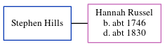

Stephen Hills, the husband of Hannah Russel (the first cousin six-times-removed on the father's side of Nigel Horne), and married Hannah in St Peters, Thanet, Kent, England on Feb 8, 17701.
Citations
England Marriages 1538-1973 - Findmypast
Family Tree

Generated by ged2site. Last updated on Jun 11, 2024